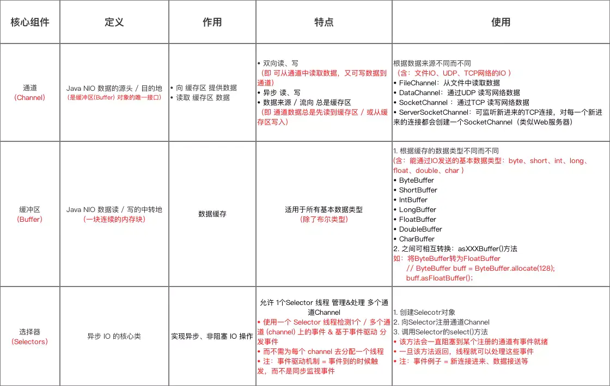

IO
IO
IO是什么
程序内部和外部进行数据交互的过程，就叫输入输出。
程序内部是谁?内存
程序外部是谁?一般来说是两类:本地文件和网络。
也有别的情况，比如你和别的程序做交互，和你交互的程序也属于外部，但一般来说，就是文件和网络这么两种。
从文件里或者从网络上读数据到内存里，就叫输入;从内存里写到文件里或者发送到网络上，就叫输出
用法
使用流，例如 FileInputStream / FileOutputStream
可以用 Reader 和 Writer 来对字符进行读写
流的外面还可以套别的流，层层嵌套都可以
BufferedXXXX 可以给流加上缓冲。对于输入流，是每次多读一些放在内存 里面，下次再去数据就不用再和外部做交互(即不必做 IO 操作);对于输 出流，是把数据先在内存里面攒一下，攒够一波了再往外部去写。
通过缓存的方式减少和和外部的交互，从而可以提高效率
文件的关闭:close()
需要用到的写过的数据，flush() 一下可以保证数据真正写到外部去(读数据 没有这样的担忧)
这个就是 Java 的 I/O，它的原理就是内存和外界的交互
IO 又可以分为 BIO、NIO、AIO
BIO、NIO、AIO 区别
IO模型主要分类：
同步(synchronous)IO与异步(asynchronous)IO
阻塞(blocking)IO与非阻塞(non-blocking)IO
同步阻塞IO(blocking-IO)即为 BIO
同步非阻塞IO(non-blocking-IO)即为 NIO
异步非阻塞IO(synchronous-non-blocking-IO)即为 AIO
BIO（同步阻塞I/O模式）
数据的读取、写入等操作必须阻塞在一个线程内等待操作完成
NIO（同步非阻塞I/O模式）
同时支持阻塞与非阻塞模式，NIO的做法是叫一个线程不断的轮询IO操作的的状态，看看是否有任务的状态发生了改变，从而进行下一步的操作。
默认是阻塞式的
AIO （异步非阻塞I/O模型）
异步非阻塞与同步非阻塞的区别在哪里？异步非阻塞无需一个线程去轮询所有IO操作的状态改变，在相应的状态改变后，系统会通知对应的线程来处理。
对应到IO操作中就是，为每次IO操作上面装了一个开关，IO操作完毕之后，会自动通知任务完成。
IO 与 NIO 的区别
IO 面向流
NIO 面向缓冲区，具备 选择器(Selectors)
同步与异步的区别
同步
- 发送一个请求，等待返回，再发送下一个请求，同步可以避免出现死锁，脏读的发生。
异步
- 发送一个请求，不等待返回，随时可以再发送下一个请求，可以提高效率，保证并发。
阻塞与非阻塞的区别
- 阻塞
传统的IO流都是阻塞式的。也就是说，当一个线程调用read()或者write()方法时，该线程将被阻塞，直到有一些数据读读取或者被写入，在此期间，该线程不能执行其他任何任务。在完成网络通信进行IO操作时，由于线程会阻塞，所以服务器端必须为每个客户端都提供一个独立的线程进行处理，当服务器端需要处理大量的客户端时，性能急剧下降。
- 非阻塞
JavaNIO是非阻塞式的。当线程从某通道进行读写数据时，若没有数据可用时，该线程会去执行其他任务。线程通常将非阻塞IO的空闲时间用于在其他通道上执行IO操作，所以单独的线程可以管理多个输入和输出通道。因此NIO可以让服务器端使用一个或有限几个线程来同时处理连接到服务器端的所有客户端。
NIO 3个核心概念

NIO重点是把Channel（通道），Buffer（缓冲区），Selector（选择器）三个类之间的关系弄清楚。
缓冲区Buffer
Buffer是一个对象。它包含一些要写入或者读出的数据。在面向流的I/O中，可以将数据写入或者将数据直接读到Stream对象中。
在NIO中，所有的数据都是用缓冲区处理。这也就本文上面谈到的IO是面向流的，NIO是面向缓冲区的。
缓冲区实质是一个数组，通常它是一个字节数组（ByteBuffer），也可以使用其他类的数组。但是一个缓冲区不仅仅是一个数组，缓冲区提供了对数据的结构化访问以及维护读写位置（limit）等信息。
最常用的缓冲区是ByteBuffer，一个ByteBuffer提供了一组功能于操作byte数组。除了ByteBuffer，还有其他的一些缓冲区，事实上，每一种Java基本类型（除了Boolean）都对应一种缓冲区，具体如下：
ByteBuffer：字节缓冲区
CharBuffer:字符缓冲区
ShortBuffer：短整型缓冲区
IntBuffer：整型缓冲区
LongBuffer:长整型缓冲区
FloatBuffer：浮点型缓冲区
DoubleBuffer：双精度浮点型缓冲区
通道Channel
Channel是一个通道，可以通过它读取和写入数据，他就像自来水管一样，网络数据通过Channel读取和写入。
通道和流不同之处在于通道是双向的，流只是在一个方向移动，而且通道可以用于读，写或者同时用于读写。
因为Channel是全双工的，所以它比流更好地映射底层操作系统的API，特别是在UNIX网络编程中，底层操作系统的通道都是全双工的，同时支持读和写。
Channel有四种实现：
FileChannel:是从文件中读取数据。
DatagramChannel:从UDP网络中读取或者写入数据。
SocketChannel:从TCP网络中读取或者写入数据。
ServerSocketChannel:允许你监听来自TCP的连接，就像服务器一样。每一个连接都会有一个SocketChannel产生。
多路复用器Selector
Selector选择器可以监听多个Channel通道感兴趣的事情(read、write、accept(服务端接收)、connect，实现一个线程管理多个Channel，节省线程切换上下文的资源消耗。Selector只能管理非阻塞的通道，FileChannel是阻塞的，无法管理。
关键对象
Selector：选择器对象，通道注册、通道监听对象和Selector相关。
SelectorKey：通道监听关键字，通过它来监听通道状态。
监听注册
监听注册在Selector
1 | socketChannel.register(selector, SelectionKey.OP_READ); |
监听的事件有
OP_ACCEPT: 接收就绪，serviceSocketChannel使用的
OP_READ: 读取就绪，socketChannel使用
OP_WRITE: 写入就绪，socketChannel使用
OP_CONNECT: 连接就绪，socketChannel使用
OKIO
okhttp框架中，使用的io
OKio本质上是对Java的NIO的一次扩展，并且做了缓存的优化，
特点
- 它也是基于插管的，而且是单向的，输入源叫 Source，输出目标叫 Sink
- 支持 Buffer
- 像 NIO 一样，可以对 Buffer 进行操作
- 但不强制使用 Buffer